Lefke'yi Bir Yerli Gibi Keşfedin
Saklı köyleri, huzurlu sahilleri, dağ yollarını, yerel kafeleri ve Kuzey Kıbrıs'ın gerçek ruhunu yansıtan tarihi noktaları keşfedin.
Rotaları Keşfet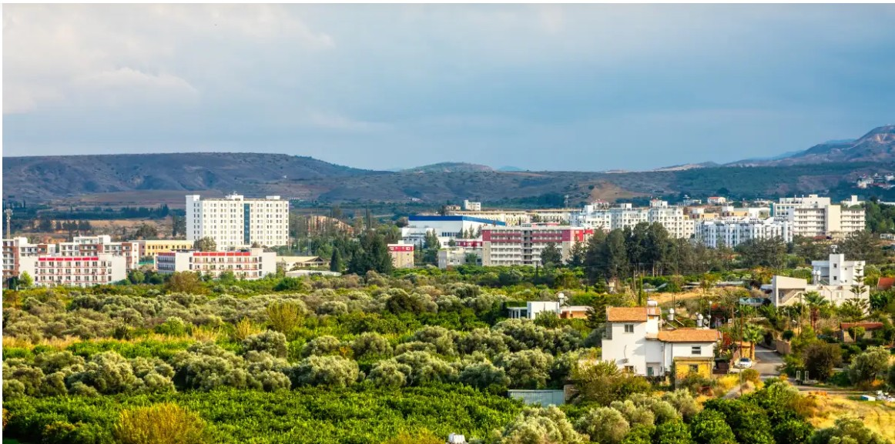
Drive KKTC'ye Hoş Geldiniz
Drive KKTC, Kuzey Kıbrıs'ın en özel bölgelerinden biri olan Lefke'yi keşfetmek isteyen ziyaretçiler için hazırlanmış yerel bir gezi rehberidir. Her rota, doğal güzellikleri, tarihi mirası ve günlük yaşamı bir araya getirerek farklı bir deneyim sunar.
İster ilk kez Kuzey Kıbrıs'ı ziyaret ediyor olun ister yeni keşifler yapmak isteyin, hazırladığımız rotalar Lefke'yi yerel halkın gözünden tanımanıza yardımcı olacaktır.
Öne Çıkan Rotalar
Lefke'nin en güzel sürüş rotalarından birini seçin.
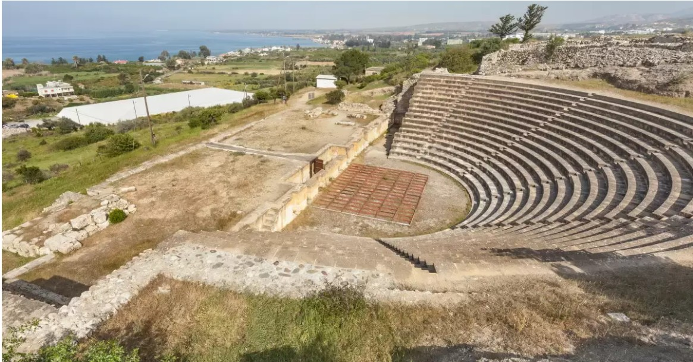
Lefke Miras Rotası
Osmanlı mimarisi, antik kalıntılar ve kültürel yapılar arasında Lefke'nin zengin tarihini keşfedin.
Rotayı İncele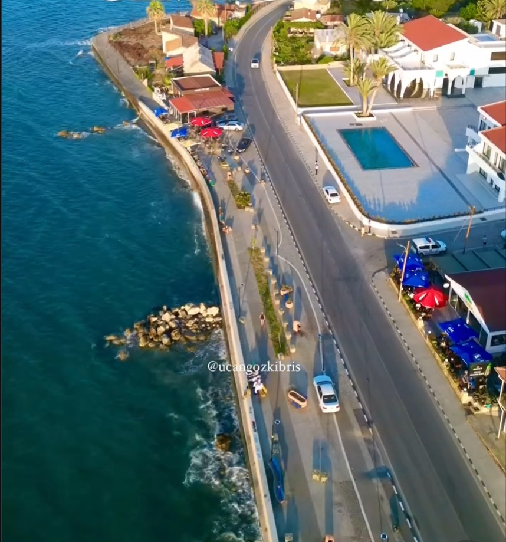
Lefke'nin Gizli Güzellikleri
Sessiz köyleri, keşfedilmeyi bekleyen doğal alanları ve yerel yaşamı yakından tanıyın.
Rotayı İncele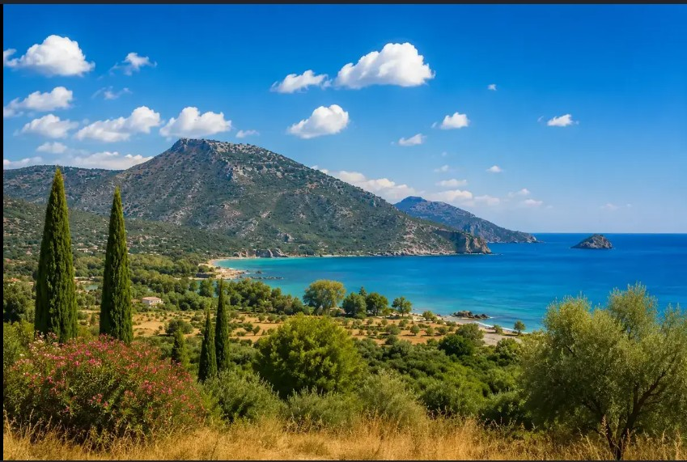
Dağlar ve Narenciye Bahçeleri
Lefke'nin dağ yollarında ilerlerken portakal bahçeleri, doğal manzaralar ve köyleri keşfedin.
Rotayı İncele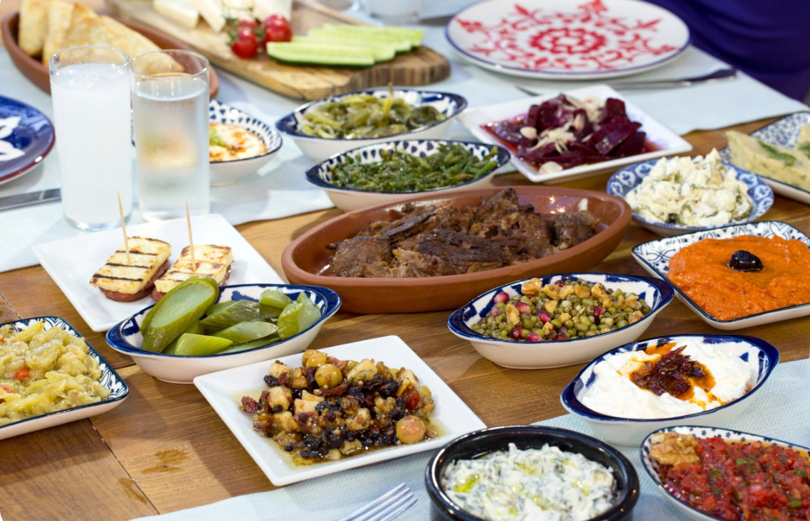
Lefke Lezzet Rotası
Geleneksel Kıbrıs mutfağını, yerel kafeleri ve taze narenciye ürünlerini deneyimleyin.
Rotayı İncele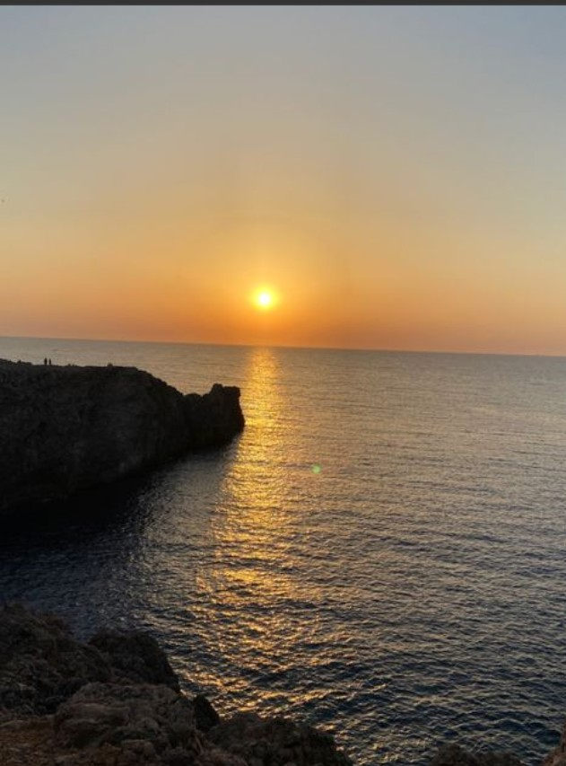
Gün Batımı ve Sahil Manzaraları
Akdeniz kıyılarında unutulmaz gün batımlarını ve huzurlu sahil yollarını keşfedin.
Rotayı İnceleLefke Miras Rotası
Lefke Miras Rotası, bölgenin zengin tarihini keşfetmek isteyen ziyaretçiler için hazırlanmıştır. Osmanlı döneminden kalma yapılar ve antik kalıntılar, Lefke'nin geçmişine ışık tutmaktadır.
1. Lefke Merkez
Geleneksel sokaklarda yürüyerek tarihi yapıları, küçük kafeleri ve günlük yaşamı keşfedin.
2. Piri Mehmet Paşa Camii
Lefke'nin en önemli Osmanlı eserlerinden biri olan cami, sade mimarisi ve huzurlu atmosferiyle dikkat çeker.
3. Osmanlı Evleri
Ahşap balkonları ve taş duvarlarıyla geleneksel Kıbrıs mimarisini yansıtan evleri yakından inceleyin.
4. Soli Antik Kenti
Roma döneminden kalan tiyatro, mozaikler ve tarihi kalıntılar ziyaretçilere geçmişi yaşatır.
5. Vuni Sarayı
Tepe üzerine kurulmuş bu antik saraydan hem tarihi hem de Akdeniz manzarasını aynı anda izleyebilirsiniz.
6. Lefke Avrupa Üniversitesi
Rotanızı modern Lefke'nin önemli simgelerinden biri olan üniversite kampüsünde tamamlayabilirsiniz.
Pratik Bilgiler
- Tahmini süre: 2–3 saat
- En uygun dönem: İlkbahar ve Sonbahar
- Zorluk seviyesi: Kolay
- Aileler ve tarih meraklıları için uygundur
Yerel Tavsiye
Lefke merkezindeki küçük kafelerde mola verin. Bölge halkı çevredeki görülmeye değer yerler hakkında faydalı öneriler sunabilir.
Dağlar ve Narenciye Bahçeleri Rotası
Lefke'nin yemyeşil doğasını keşfetmek isteyenler için hazırlanan bu rota, dağ yolları, köyler ve narenciye bahçeleri arasında unutulmaz bir yolculuk sunuyor.
1. Troodos Etekleri
Temiz havası ve etkileyici dağ manzaralarıyla yolculuğunuza güzel bir başlangıç yapabilirsiniz.
2. Cengizköy
Sessiz atmosferi ve doğal güzellikleriyle dikkat çeken küçük bir köydür.
3. Bağlıköy
Geleneksel taş evleri ve yeşil çevresiyle Lefke'nin en güzel köylerinden biridir.
4. Narenciye Bahçeleri
Portakal ve limon ağaçları arasında keyifli bir sürüş yaparak bölgenin tarımsal zenginliğini keşfedebilirsiniz.
5. Seyir Noktası
Vadileri ve Akdeniz'i aynı anda görebileceğiniz eşsiz bir manzara sunar.
6. Orman Piknik Alanı
Doğayla iç içe kısa bir mola vermek ve dinlenmek için ideal bir noktadır.
Pratik Bilgiler
- Tahmini süre: 4 saat
- En uygun dönem: İlkbahar
- Zorluk seviyesi: Orta
- Doğa severler için tavsiye edilir
Yerel Tavsiye
İlkbaharda narenciye ağaçlarının çiçek açtığı dönemde rota çok daha etkileyici bir görünüme kavuşur.
Lefke Lezzet Rotası
Bir bölgeyi tanımanın en güzel yollarından biri yerel lezzetlerini keşfetmektir. Bu rota, Lefke'nin geleneksel yemeklerini, küçük kafelerini ve nesilden nesile aktarılan tatlarını deneyimlemek isteyen ziyaretçiler için hazırlanmıştır.
1. Geleneksel Kahvaltı Mekanı
Güne Kıbrıs'a özgü peynirler, zeytinler, taze ekmek, ev yapımı reçeller ve mevsim meyveleriyle hazırlanan geleneksel bir kahvaltıyla başlayın.
2. Yerel Kahve Evi
Kıbrıs kültürünün önemli bir parçası olan Türk kahvesini sakin ve samimi bir ortamda deneyimleyin.
3. Köy Fırını
Her sabah hazırlanan taze ekmekler, hamur işleri ve geleneksel tatlılarla yerel mutfağın lezzetlerini keşfedin.
4. Narenciye Durağı
Lefke'nin ünlü portakal ve limon bahçelerinden gelen taze meyve sularını tadabilirsiniz.
5. Aile Restoranı
Akdeniz manzarası eşliğinde taze deniz ürünleri ve geleneksel Kıbrıs yemeklerinin tadını çıkarın.
6. Köy Tatlı Kafesi
Ev yapımı tatlılar, kekler ve kahve eşliğinde rotanızı keyifli bir şekilde tamamlayın.
Pratik Bilgiler
- Tahmini süre: 3 saat
- En uygun dönem: Tüm yıl
- Zorluk seviyesi: Kolay
- Yemek severler ve aileler için uygundur
Yerel Tavsiye
Kafelerde mevsimlik ev yapımı tatlıları mutlaka sorun. Bazı tarifler Lefke'de yıllardır aileler tarafından korunmaktadır.
Gün Batımı ve Sahil Manzaraları Rotası
Lefke'nin sakin sahillerini takip eden bu rota, Akdeniz'in huzurlu atmosferini ve etkileyici gün batımlarını keşfetmek isteyenler için mükemmel bir deneyim sunar.
1. Gemikonağı Sahili
Deniz havası, yürüyüş alanları ve sakin atmosferiyle rotanın başlangıç noktasıdır.
2. Soli Plajı
Temiz denizi ve doğal çevresiyle dinlenmek ve manzaranın tadını çıkarmak için ideal bir yerdir.
3. Balıkçı Limanı
Yerel balıkçı teknelerini izleyebilir ve bölgenin günlük yaşamına tanıklık edebilirsiniz.
4. Sahil Yürüyüş Yolu
Akdeniz kıyısında huzurlu bir yürüyüş yaparak deniz manzarasının keyfini çıkarabilirsiniz.
5. Gün Batımı Seyir Noktası
Güneşin Akdeniz üzerinde kayboluşunu izlemek için bölgedeki en güzel noktalardan biridir.
6. Akdeniz Panorama Noktası
Lefke'nin batı kıyılarının doğal güzelliğini gösteren etkileyici bir manzara alanıdır.
Pratik Bilgiler
- Tahmini süre: 2–3 saat
- En uygun zaman: Gün batımından önce
- Zorluk seviyesi: Kolay
- Fotoğrafçılar ve çiftler için uygundur
Yerel Tavsiye
En iyi fotoğraf noktasını bulmak için gün batımından yaklaşık 30 dakika önce bölgeye ulaşın.
Gezi Galerisi
Lefke'nin doğal güzelliklerinden, tarihi yapılarından ve sahil manzaralarından bazı görüntüler.
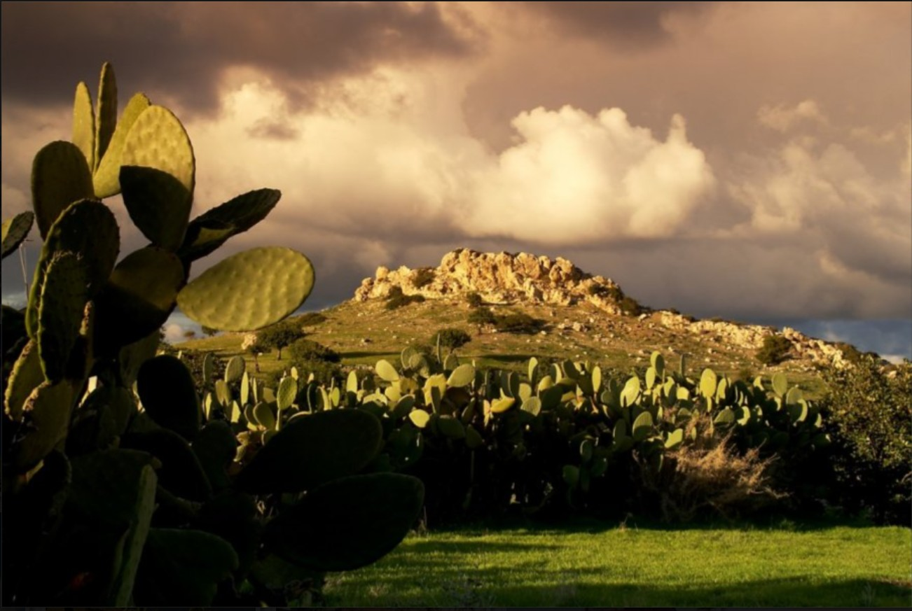
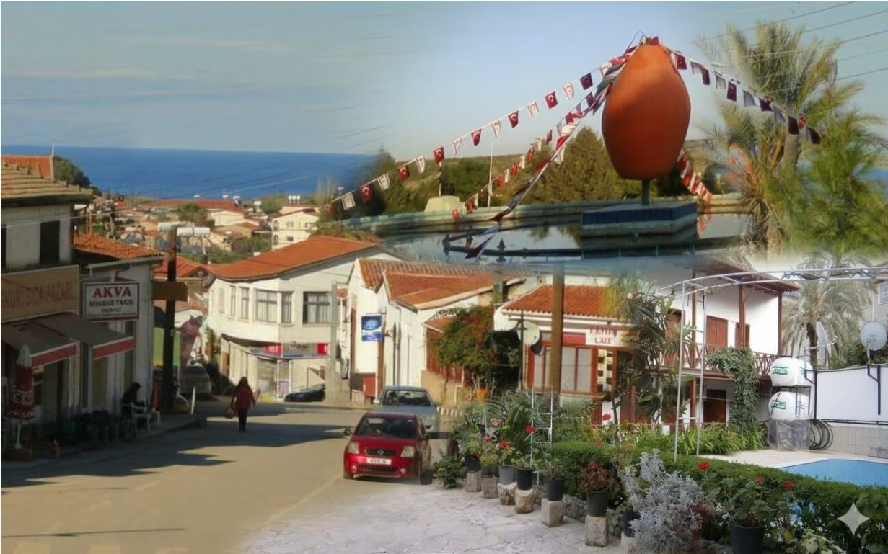
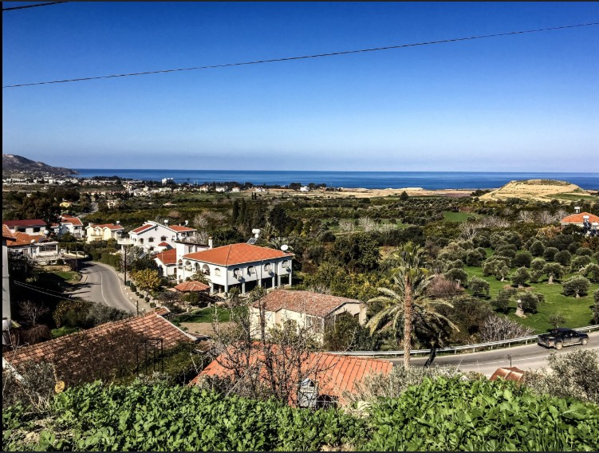
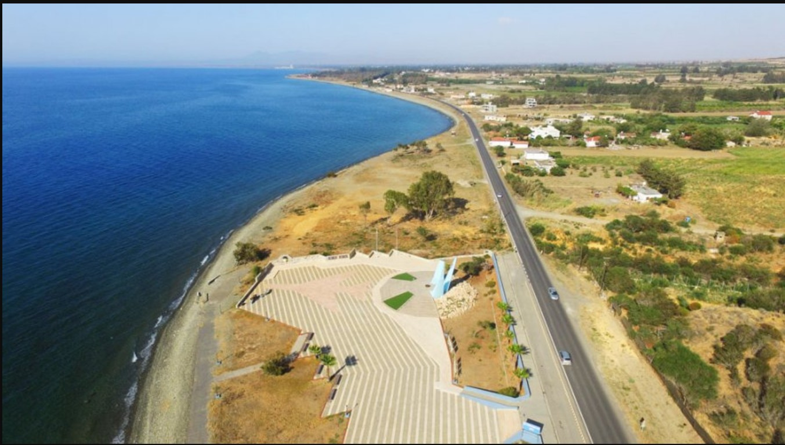
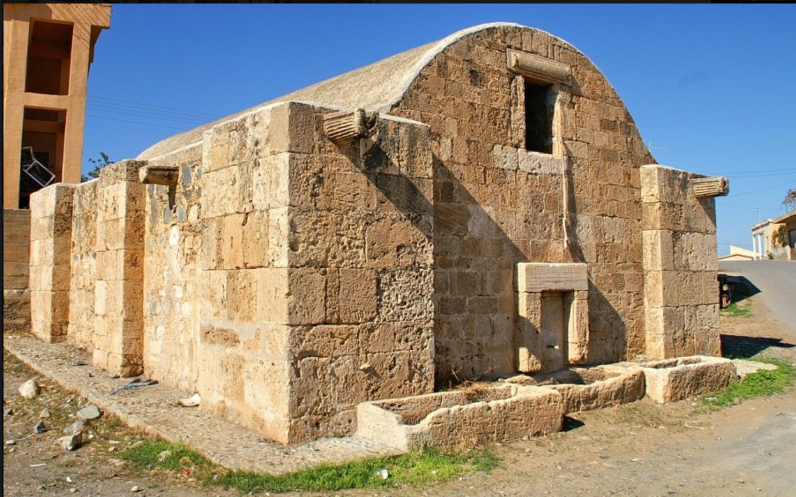
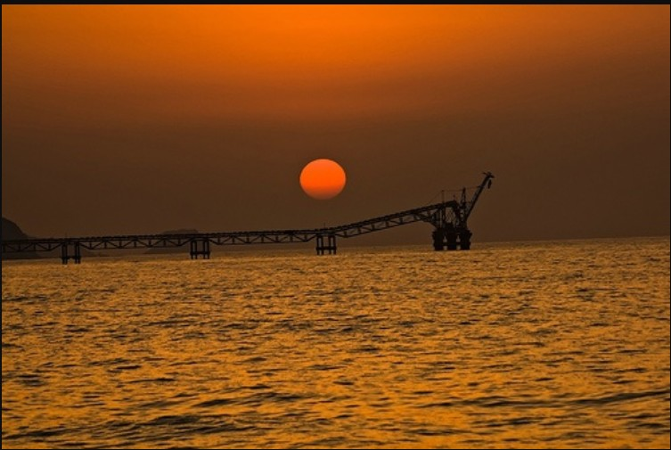
Seyahat İpuçları
Lefke yolculuğunuzu daha keyifli ve güvenli hale getirmek için bazı öneriler.
Erken Başlayın
Sabah erken saatlerde yola çıkmak, daha fazla yer keşfetmenizi ve yaz aylarında sıcaklardan kaçınmanızı sağlar.
Dikkatli Sürüş Yapın
Köy yollarının bazı bölümleri dar ve virajlı olabilir. Yavaş sürerek manzaranın tadını çıkarın.
Yerel İşletmeleri Destekleyin
Küçük kafeleri, restoranları ve yerel üreticileri tercih ederek bölge ekonomisine katkıda bulunun.
Yanınızda Su Bulundurun
Özellikle yaz aylarında doğa yürüyüşleri ve uzun rotalar için yeterli miktarda su taşıyın.
Doğaya Saygı Gösterin
Tarihi alanları ve doğal bölgeleri koruyarak Lefke'nin güzelliğinin devam etmesine yardımcı olun.
Yolculuğun Tadını Çıkarın
Bazen en güzel anılar planlanmamış küçük duraklarda ortaya çıkar.
Drive KKTC Hakkında
Drive KKTC, her yolun bir hikayesi olduğuna inanan bir seyahat rehberi projesidir. Amacımız Kuzey Kıbrıs'ın daha az bilinen bölgelerini, yerel kültürünü ve doğal güzelliklerini ziyaretçilere tanıtmaktır.
Bu web sitesi Lefke bölgesine odaklanmaktadır. Tarihi alanlar, doğal manzaralar, yerel lezzetler ve sakin yollar sayesinde ziyaretçilere farklı bir keşif deneyimi sunmayı hedefliyoruz.
İletişim
Bizimle İletişime Geçin
Yeni rota önerileriniz veya seyahat deneyimleriniz hakkında bizimle iletişime geçebilirsiniz.
E-posta: info@drivekktc.com
Konum: Lefke, Kuzey Kıbrıs